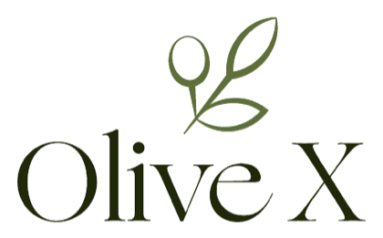

EUs offisielle helsepåstand
Olivenolje må inneholde minst 250 mg polyfenoler per kilo for å bruke helsepåstanden.

Høyphenolitisk olje
En spiseskje om dagen for cellene, hjertet og hjernen. Dokumentert av vitenskapen – verifisert av laboratoriet.
Nettbutikk
Velg størrelse og kjøpsvalg når pris og volum er klare. Når analysebeviset er klart, lenkes det direkte fra produktsiden.
Polyfenolene gjør forskjellen
De fleste forbrukere vet at ekstra virgin olivenolje er sunt. Det mange ikke vet, er at helsefordelene i all hovedsak drives av mikroskopiske plantestoffer som kalles polyfenoler.
Minimum for å bruke EUs offisielle helsepåstand.
Nesten tre ganger så høy konsentrasjon av aktive virkestoffer i hver eneste dråpe.
Olivenolje må inneholde minst 250 mg polyfenoler per kilo for å bruke helsepåstanden.
Innholdet synker gradvis jo lenger flasken står i butikkhyllen.
Den er høstet tidlig og presset under strenge temperaturkrav for å bevare virkestoffene.

Når du smaker på vår olje, vil du merke en distinkt, skarp og pepperaktig følelse bakerst i halsen. Dette er ikke en feil; det er det ultimate kvalitetstegnet.
Denne stikkingen skyldes Oleocanthal, et unikt polyfenol som utgjør over 67 % av det totale fenolinnholdet i vår olje.
Betennelsesdemping uten bivirkninger: Mens medisiner kan irritere magesekken, tynne ut blodet eller belaste nyrene ved langvarig bruk, gir vår høyphenolitiske olje en naturlig, lavdose betennelsesdemping som jobber trygt i bakgrunnen – helt uten negative bivirkninger for kroppen.
I 2005 oppdaget forskere at oleocanthal hemmer kroppens betennelsesenzymer (COX-1 og COX-2) på nøyaktig samme kjemiske måte som virkestoffet i kjente, betennelsesdempende medisiner (som Ibuprofen).
Den unike stjernespilleren
Oleocanthal: Det unike molekylet som kun finnes i olivenolje.
Hva skjer i kroppen?
Dette er ikke vage løfter om velvære. Dette er de direkte biologiske konsekvensene EUs mattrygghetsorgan (EFSA) og store kliniske studier knytter til et daglig inntak av 20 gram høyphenolitisk olje.
Oljen beskytter hjertet ditt på tre måter samtidig: hindre harskning av kolesterol, lavere blodtrykk og elastiske årer.
Hvorfor ikke bare ta en pille?
Oleocanthal og de andre polyfenolene i vår olje er fettløselige. Naturen har pakket dem inn i oljens sunne, enumettede fettsyrer.
Vitenskapelig dokumentasjon
Vi baserer våre forklaringer på fagfellevurdert forskning. Dette er de sentrale studiene som dokumenterer effektene vi beskriver.
Den opprinnelige studien som oppdaget oleocanthal og beskriver COX-1 og COX-2.
Stor klinisk studie på ekstra virgin olivenolje og hjerterelaterte utfall.
EUs offisielle godkjenning for olivenoljens polyfenoler og oksidativt stress.
Kliniske studier på høyphenolitiske oljer, kroppsvekt, fettlever og betennelsesmarkører.
Dokumenterer hvordan oleocanthal knyttes til amyloid-beta-plakk og hjernebeskyttelse.
Produsenten i Hellas
Når videoen er klar, viser denne delen produsenten, olivenlunden og produksjonsmiljøet.
Plassholderen byttes direkte med produsentens video når filen er klar.
Betaling og levering
Velg størrelse, betal med Vipps eller kort, og få levering med Posten/Bring.
Størrelse og pris låses når endelig produktdata er klart.
Checkout viser tilgjengelige betalingsvalg før betaling.
Leveringsvalg, hentested og sporing hører hjemme i checkout.
SSL, kjøpsvilkår, retur, personvern og ordrebekreftelse følger nettbutikken.
Spørsmål og svar
Still et spørsmål, eller velg et av de vanligste spørsmålene. Svarene hentes fra FAQ, produktsiden og informasjonen på siden.